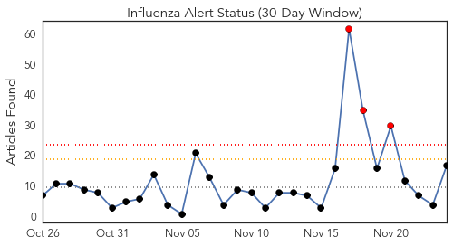
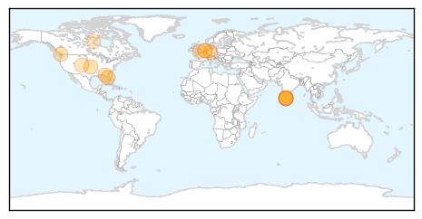
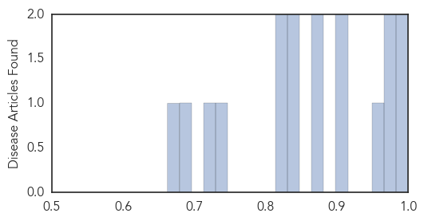
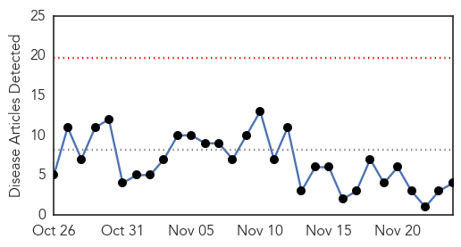
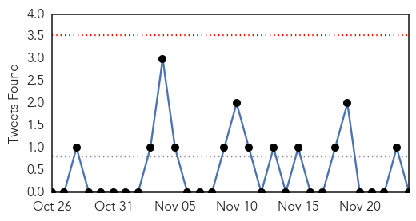
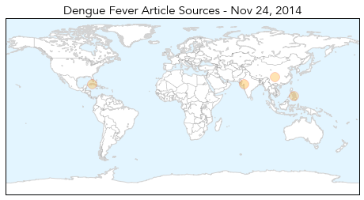
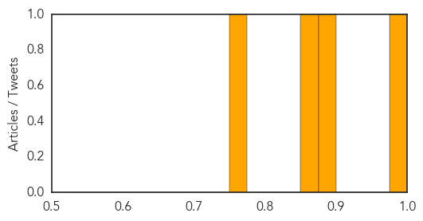

Influenza
30-Day Web Trend
3 alerts, 0 warnings

30-Day Twitter Trend
0 alerts, 0 warnings

Article Locations
Article Confidences
Top Articles:
- 1.000
- Two children die of the flu in Orange and Pasco counties
- 0.999
- Do you know when and to whom to give each influenza vaccine?
- 0.972
- Flu vaccine less effective against mutant strain
- 0.967
- Europe On Alert Against Possible Avian Flu Outbreak
- 0.964
- Officials: 2 Florida kids die from flu-related illnesses
- 0.910
- Avian Flu in Kerala
- 0.902
- Bird flu outbreak in Kottayam, Alappuzha
- 0.875
- Bird flu outbreak confirmed in Kerala
- 0.870
- New avian flu strain detected in Europe: UN agency
- 0.843
- Bird flu detected in Kuttanad
- 0.835
- New tool detects beginning of flu season
- 0.827
- Inside Toronto > Home
- 0.822
- H1N1 (Swine flu) kills ducks in Kerala, CM Oommen Chandy calls meeting
- 0.744
- This year's flu will make you sicker
- 0.720
- Farms await bird flu test results: Ducks culled
- 0.692
- Kerala’s Kuttanad region in the grip of bird flu scare
- 0.662
- Today's stories from newspapers in London
Top Tweets:
-
No tweets found for Nov 24, 2014
Dengue Fever
30-Day Web Trend
0 alerts, 0 warnings

30-Day Twitter Trend
3 alerts, 0 warnings

Article Locations
Article Confidences
Top Articles:
Top Tweets:
-
No tweets found for Nov 24, 2014